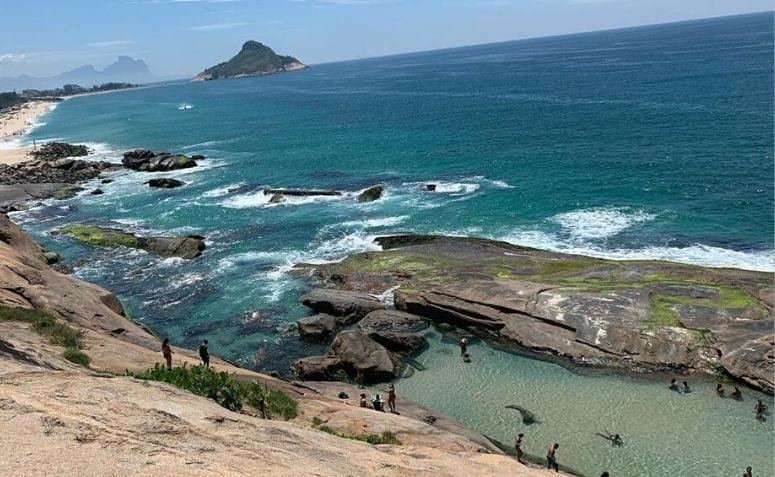

Orla da Zona Sul do Rio de janeiro aonde localiza as principais e mais belas praias conhecidas do Mundialmente.

Praia de Copacabana é a queridinha do Rio de janeiro conhecida mundialmente por sua beleza e queimas de fogos no Réveillon.Foto da Estátua de Vinicius de Moraes que foi um poeta e um dos maiores compositores da música popular brasileira

Praia do Arpoador é o palco principal para o espetáculo, mas o pôr do sol nas praias de Ipanema e Leblon (que são continuação do Arpoador) também são de cair o queixo.

Praia da Joatinga está situada entre a Barra da Tijuca e São Conrado, localizada no bairro do Joá e escondida. A praia da joatinga é o point dos surfistas, de gente bonita e da galera jovem. Como é uma praia mais isolada e de difícil acesso, vários artistas também costumam circular por ali. É uma praia exclusiva mesmo, ótima para quem quer um pouco de privacidade e segurança.
